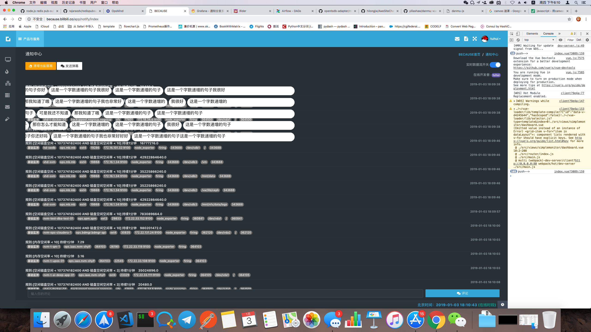
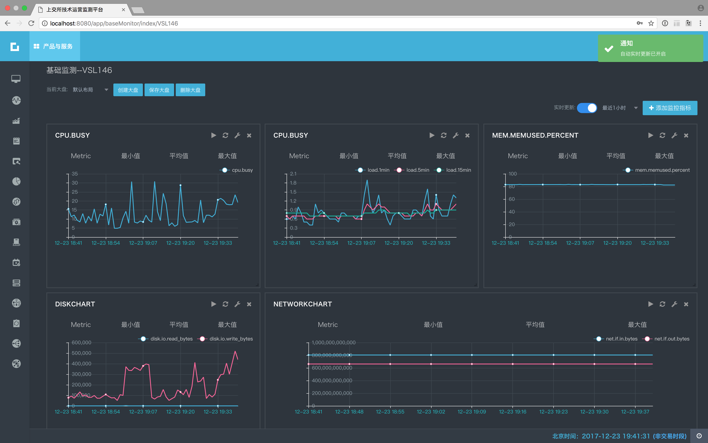

プロジェクトの経験
【プロジェクト名】Bilibiliステレオモニタリングプラットフォーム(2018年)
【職務】アーキテクチャ、主な開発
【内容】 负责Bilibili监控平台的整体架构设计，基于Prometheus，使用PromQL亲自编写了各种监控算法的规则，并且让Prometheus支持集群化方案和冷热存储分离，实现超过1亿的Series存储和超过2W个Metric指标的采集，通过通用的表达式来让研发可以自主配置不通的阀值。开发应用配置的后台已经Web端口和移动端应用。
【プロジェクト写真】
リアルタイムログWebsocketダッシュボード（ケースコラボレーションのトラブルシューティング用のリアルタイム砲撃システム付き）リアルタイムログWebsocketダッシュボード（ケースコラボレーションのトラブルシューティング用のリアルタイム砲撃システム付き）

イベントセンター
650px
【プロジェクト名】 定量的取引システム (2017年)
【職務】アーキテクチャ、主な開発
【内容】金融および経済データ、A株、米国、香港の株式市場データ、およびウェブクローラーを介した金融データを収集します。 異なる時間と緯度でのKラインデータの計算は、クロスデータとMACD、KDJなどの指標の値を計算して、株式市場のトレンドを判断できます。 Pythonを使用して、取引量とサポート価格の高低によって、メッセージプッシュの同じパターンの株を計算します。 IOSネイティブアプリケーションを開発して、個々の株のKラインを表示し、計算結果を定量化しました。 ほぼ高頻度でのリアルタイム取引が可能です。
【プロジェクト名】SSEテクニカルオペレーションモニタリングプラットフォーム (2017年)
【職務】アーキテクチャ、製品、UIデザイン、バックエンド開発、フロントエンド開発
【内容】 上海証券取引所の取引システム全体の閉ループ監視を担当し、SREが序文に登場しました。コア取引システム、周辺ビジネスシステム、ビッグデータシステムを含む0から1までの完全な自己開発。 大量のデータを処理するためのリアルタイム監視システム。 Pythonとメモリデータベース、およびデータ受信キューとしてのKafkaを使用した入札データのリアルタイム分析。 処理遅延は30ミリ秒以内です。 監視システム全体の応答時間は秒単位で制御されます。 プロジェクトアーキテクチャ全体を設計し、ゲートウェイフレームワークコードの記述に参加しました。 Pythonリアルタイム計算処理エンジン。 メトリックアラートルールエンジン。 交換環境と3次元監視システムに基づいてCMDBを計画および設計します。
【プロジェクト写真】
運用および保守要員のシステム用のリアルタイムかんばん

システム容量監視

VueでリファクタリングされたGrafana

リファクタリングされたGrafanaカスタムメトリックメトリック

CMDBと組み合わせた単一サーバープレビュー

バッチ処理システムのリアルタイムデータ監視

取引ゲートウェイシステムの監視

BMSシステム監視

【プロジェクト名】SSE Financial Cloudプラットフォーム (2016年)
【職務】アーキテクチャ
【内容】コンテナクラウドプラットフォームに基づくSSEの運用および保守開発を担当します。 コンテナクラウドプロトタイプは、Mesos and Marathonスケジューリングフレームワークに基づいて構築されました。 後にk8sに変換され、Dockerfile自動パッケージングシステムが開発されました。 NGINXオンライン構成管理システム。 上場企業のインターネット事業とCSRCのリングネットワーク間の対称ネットワーク相互訪問を支配し、設計しました。 openrstyに基づくグレーシステムが構築されました。 mesos Docker環境全体の監視およびサンプリングシステムを開発します実際にnodejsは、ETLを達成するために異種分離システム間でデータを抽出できるポンプデータポンプを開発しました。
【プロジェクト名】JD.COMネットワーク検出プラットフォーム (2015年)
【職務】アーキテクチャ、主な開発
【内容】ネットワーク全体のリンク品質検出は、現在のネットワーク品質を正確に反映し、自動障害切り替えを実現できます。 非同期icmpプロトコルとtcpプロトコルにより、特定のアルゴリズムに従って、国内で最高の検出品質を備えた検出ベースポイントが取得されます。 プロジェクト全体は、NodeJSの高度な同時実行性および非同期機能に基づいており、全国の多数の検出ポイントを数秒で検出できます。
【プロジェクト名】京东无线APM平台 (2015年)
【職務】製品,アーキテクチャ,開発
【内容】JD Wirelessのエンドツーエンドのパフォーマンス分析。 elasticsearchに基づいて、毎日のデータ処理量は5億個に達し、ユーザーから報告されたパフォーマンスデータに対してDSLクエリが実行され、結果と実際のユーザーエクスペリエンスデータが取得されます。
【プロジェクト名】Ucloud BI運用データプラットフォーム (2014年)
【職務】製品,アーキテクチャ,開発
【内容】Ucloudデータプラットフォームの開発を担当し、HadoopとElasticsearchを使用してオフラインデータ分析および処理プラットフォームを構築し、さまざまな財務データレポートを計算し、運用データを分析し、ビジネススタッフに迅速なクエリと自動レポート生成を提供します。
【プロジェクト名】Sevnoteログ分析システム (2013年)
【职责】製品,アーキテクチャ,開発
【職務】システムノートSevnoteは、NodeJSを使用して開発されたElasticsearchベースの大規模なログ分析システムです。ホスト、デバイス、プログラム、優先度、キーワードでシステムログをフィルター処理でき、動的ダッシュボードはログ生成をリアルタイムで監視できます。 Syslogプロトコルのサポート：Sevnote-agentをインストールすると、Webアクセスログや、集中管理用のアプリケーションによって生成されたログなど、任意のテキスト形式のログを収集できます。 監視がパルスとして記述される場合、ログの検索はシステムの健全性の血液検査です(オープンソース製品，詳細を見る https://www.oschina.net/p/sevnote)。
【プロジェクト写真】
ログ検索ホーム

Grokでログを自由にカッ

製品化されたログインポートウィザード
ログクエリ期間の自由な選択